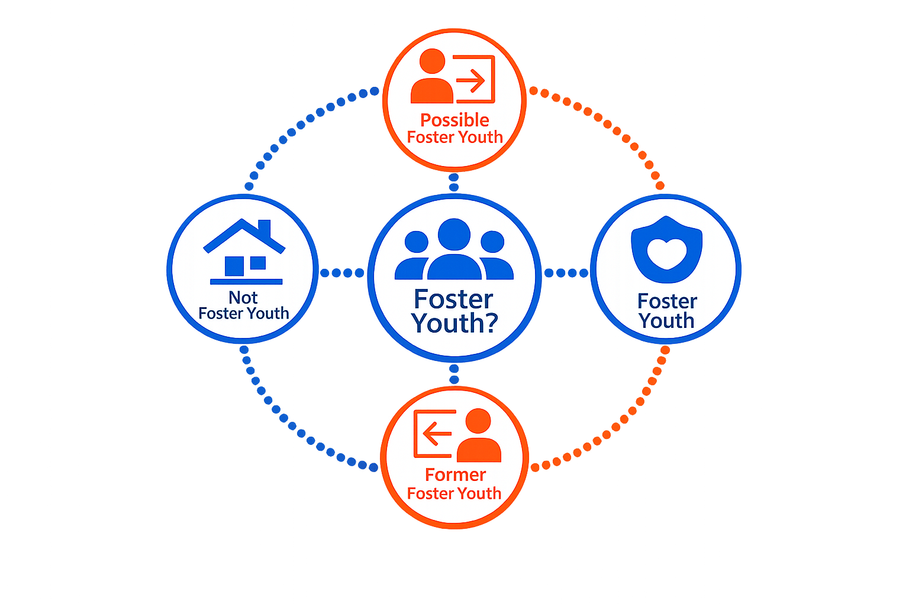

Foster or Not?
Foster Youth status can change over time. Depending on a student's circumstances, they may:
- Currently qualify as Foster Youth
- Have qualified in the past
- Qualify in the future
- Never meet the definition
Understanding these distinctions helps explain why students may receive different supports, services, or educational protections.
KEY TAKEAWAY
Because status can change over time, understanding when it begins, ends or may not apply is essential to interpreting Foster Youth data correctly.
Foster Youth Categories
